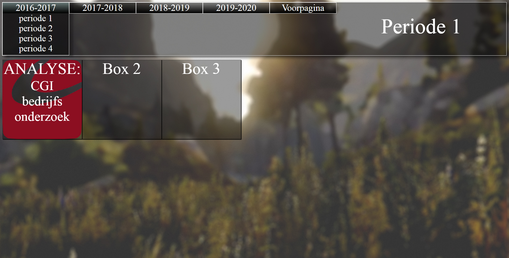
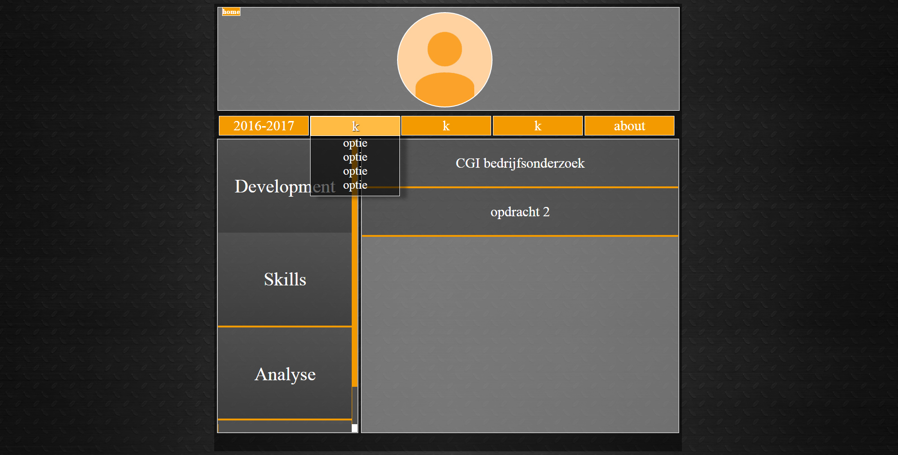
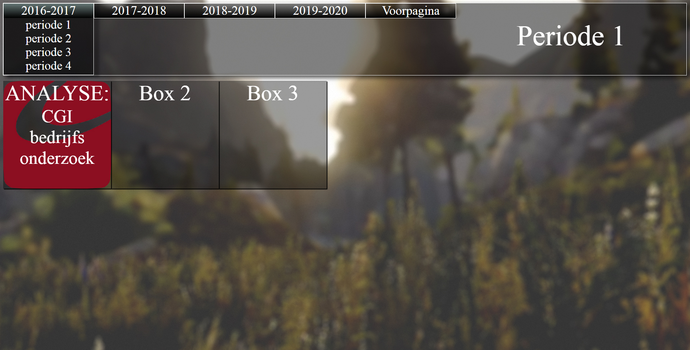
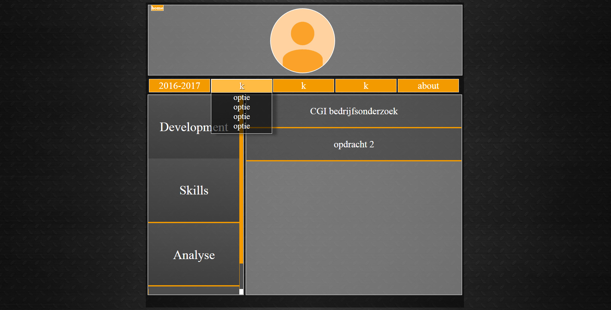

over de website
Het ontstaan van deze website:
Voor mijn opleiding had ik een eigen website nodig. De website hoort te dienen als een portfolio waarop je je werk kan laten zien zoals: eigen projecten, school projecten en andere dingen. De keuze was aan ons, de leerlingen, om te kiezen of je deze zelf ging maken, een template ging gebruiken of je portfolio op een website zoals wordpress aanmaken. Ik heb er voor gekozen om mijn eigen website from scratch te bouwen. Ik wil mijn website zo bouwen dat de persoon die het bekijkt een overzicht heeft van wat ik allemaal gedaan heb en wanneer. Ook wil ik graag vooruitgang tonen door al mijn werk te rangschikken op welk jaar het gemaakt is. Beide goede en slechte werken komen erop te staan zodat ik kan laten zien wat ik ervan geleerd heb, wat ik voortaan beter zou kunnen doen en algemene vooruitgang in het leren van programmeren. Ik ben altijd iemand die meteen begint met bouwen en niet eerst nadenkt over belangrijke dingen (ik was in de eerste week al begonnen voordat we lessen in scrum kregen). Vandaar dat ik de website tot wel drie keer toe opnieuw heb gebouwd, omdat ik telkens net niet tevreden was met wat ik had gemaakt. Maar ja, daar leren we tenslotte van.
Als eerst begon ik met dit:  Als u interesse heeft kunt u hier klikken en de website downloaden.
Ik vind dit een van mijn slechtere werken. De website schaalt niet goed mee met de resolutie van het scherm, Verschillende stukken botsen met elkaar en verplaatsen de boel en over het algemeen vind ik de website niet echt mooi. Wel vind ik de transparantie van de vlakken een leuk zicht en vind ik het goed bij het ontwerp passen als de layout wat netter was.
poging twee:
Vervolgens ben ik begonnen met het maken van een website die niet van kant tot kant het scherm bedekt en met een wat strakkere layout. Toen had ik dit gemaakt:  Als u interesse heeft kunt u hier klikken en de website downloaden.
Ik vind deze website al stukke beter vergeleken met wat ik eerst had, de layout is stukke overzichtelijker, het ziet er strakker en de website ziet er meer 'clean' uit.
Toch vind ik deze website net niet passen bij wat ik wil. De website heeft een beetje een sfeer die niet bij een portfolio past. Als ik naar deze website kijk denk ik eerder aan een gamewebsite of een forum, niet het doel wat ik in mijn gedachte had dus. Waarschijnlijk komt het door de donkere kleuren en donkere achtergrond.
Ik ben dus uiteindelijk een derde keer opnieuw begonnen en dat is de website waar u nu op zit.
Voor mijn opleiding had ik een eigen website nodig. De website hoort te dienen als een portfolio waarop je je werk kan laten zien zoals: eigen projecten, school projecten en andere dingen. De keuze was aan ons, de leerlingen, om te kiezen of je deze zelf ging maken, een template ging gebruiken of je portfolio op een website zoals wordpress aanmaken. Ik heb er voor gekozen om mijn eigen website from scratch te bouwen. Ik wil mijn website zo bouwen dat de persoon die het bekijkt een overzicht heeft van wat ik allemaal gedaan heb en wanneer. Ook wil ik graag vooruitgang tonen door al mijn werk te rangschikken op welk jaar het gemaakt is. Beide goede en slechte werken komen erop te staan zodat ik kan laten zien wat ik ervan geleerd heb, wat ik voortaan beter zou kunnen doen en algemene vooruitgang in het leren van programmeren. Ik ben altijd iemand die meteen begint met bouwen en niet eerst nadenkt over belangrijke dingen (ik was in de eerste week al begonnen voordat we lessen in scrum kregen). Vandaar dat ik de website tot wel drie keer toe opnieuw heb gebouwd, omdat ik telkens net niet tevreden was met wat ik had gemaakt. Maar ja, daar leren we tenslotte van.
Als eerst begon ik met dit:  Als u interesse heeft kunt u hier klikken en de website downloaden.
Ik vind dit een van mijn slechtere werken. De website schaalt niet goed mee met de resolutie van het scherm, Verschillende stukken botsen met elkaar en verplaatsen de boel en over het algemeen vind ik de website niet echt mooi. Wel vind ik de transparantie van de vlakken een leuk zicht en vind ik het goed bij het ontwerp passen als de layout wat netter was.
poging twee:
Vervolgens ben ik begonnen met het maken van een website die niet van kant tot kant het scherm bedekt en met een wat strakkere layout. Toen had ik dit gemaakt:  Als u interesse heeft kunt u hier klikken en de website downloaden.
Ik vind deze website al stukke beter vergeleken met wat ik eerst had, de layout is stukke overzichtelijker, het ziet er strakker en de website ziet er meer 'clean' uit.
Toch vind ik deze website net niet passen bij wat ik wil. De website heeft een beetje een sfeer die niet bij een portfolio past. Als ik naar deze website kijk denk ik eerder aan een gamewebsite of een forum, niet het doel wat ik in mijn gedachte had dus. Waarschijnlijk komt het door de donkere kleuren en donkere achtergrond.
Ik ben dus uiteindelijk een derde keer opnieuw begonnen en dat is de website waar u nu op zit.